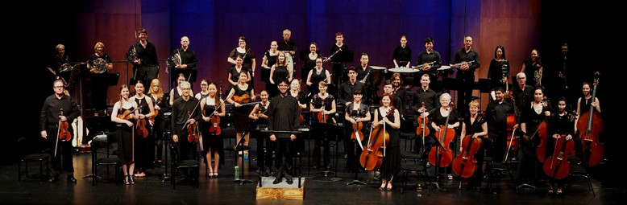

LATEST NEWS

Conductor Mark Sheill with members of the Barrier Reef Orchestra's final concert for 2015 A Musical Feast [photographer: Cam Leitch]
PRESIDENT'S MESSAGE-Andrew Ryder
Welcome to 2016 which is going to be a stellar year for your Orchestra. Already we have our three major concerts which will include opera, featuring Paul Tabone born in Ingham, but now working the international stage as a tenor based in Italy. Rachmaninov's Piano Concerto No.2 featuring last year's winner of the instrumental section of the ACVC, Arthur Athan. Our opening performance titled Dreams and Dances is sure to have some favourites such as Afternoon of a Fawn by Debussy. We are also pleased to be part of the Townsville 150 Concert where we will share the stage with the likes of David Campbell, Luke Kennedy, Bronwyn Douglas and the 1 RAR Band just to name a few of the guests. We will be back to Queens Gardens for a repeat performance as part of AFCM due to the huge popularity of last year's concert. All of these performances are ably managed by our Orchestra Manager, Sally Frewen-Lord and the wonderful team that is your committee.
As we look forward to the next milestone for the Orchestra in 2020 it is worthwhile to reflect on the development and struggles the BRO has endured. It is through the Townsville Council's financial support that started the ball rolling and assisted with seed funding that has allowed BRO to develop to where it is today. Initially, this funding represented the majority of the turnover for BRO. Through the hard work of the committee and the musicians the Council funding is now around 20% of the turnover. In my opinion this is a substantial move forward and shows the Council's support is well founded and supported by the public attendance at our concerts. It is crucial that the support from the Council be maintained into the future to assist BRO to grow. The funding is not taken as a given and we must all do our bit to let the Council know how important it is to continue the development of BRO for Townsville audiences and local musicians. I urge all members to make this point as often and as loudly as you can to ensure the Council knows it is getting value for money and meeting the needs of the community.
Finally, the AGM is soon to be upon us and there will be some vacancies on the committee. My reign of terror will be coming to an end as I will be stepping down, so we will be looking for a new President. I am flagging this now to allow the search to begin for the next President. I can assure any prospective nominees that they will find a willing and dynamic committee at their disposal and a myriad of challenges just waiting to be resolved. I can highly commend this position and would be pleased to speak to anyone considering the position. See you all at the launch.

ORCHESTRA MEMBER
Why is it that just when we get to know and like some orchestra members, they up and leave us? Such is the case with our principal cellist, Rachel Lind, who played in her last concert with us in November. Rachel was born and bred in Aberdeen, Scotland, where she began learning the cello at 7 years old. As well as her local teacher Hilary Cromar, she had the benefit of studying once a month with visiting Professor from London, James Halsey. At 16 she passed her ABRSM Grade 8 with distinction. She developed her orchestral experience with the National Youth Orchestras of Scotland, under the baton of several well-known names including Garry Walker and Martyn Brabbins, eventually leading the 'cello section of NYOS Senior orchestra. With NYOS she was lucky enough to tour in Europe several times and played at the London Proms in 2003.
Rachel went on to study medicine at Aberdeen University and qualified as a doctor in 2009, moving to Edinburgh to start work as an Intern. In September 2011, she migrated to Townsville to work in the Emergency Department at the Townsville Hospital. She didn't forget music though, joining BRO straight away and also the Australian Doctors' Orchestra. Now after 4 years in tropical Queensland she is moving to Melbourne to continue her training in Emergency Medicine at the Royal Melbourne Hospital where she will also continue to play with the ADO and the Victorian Medical Orchestra: Corpus Medicorum. As well as music Rachel enjoys staying fit, SCUBA diving, visiting her big brother in Brisbane and spending time with her rescue dog Ruby. Good luck for the future, Rachel.
We will miss you.
Our next performance is -Dreams and Dances- Tuesday 8th March at 7.30 pm at the Townsville Civic Theatre
Richard McIntyre OAM has maintained a long and distinguished career as bassoonist, music educator, conductor and arranger. A Composition graduate from Sydney University, he was appointed Associate Principal Bassoon with the Sydney Symphony Orchestra as a 20-year-old in 1968, moving to The Canberra School of Music as a foundation member of the Canberra Wind Soloists in 1978. With this renowned quintet, he recorded and toured internationally during a 30-year period, and gave it a unique repertoire with his virtuoso arrangements of large-scale orchestral works.
He was for many years Principal Bassoon with the Australian Chamber Orchestra, and appeared on many occasions as guest Principal Bassoon with most of the Symphony Australia Orchestras - also as concerto soloist, and independently as a recitalist. His continuing work as Principal Bassoon with the Canberra Symphony Orchestra dates back to student days of 1965 - 67. If you'd like to hear some of his work as bassoonist, chamber musician, and arranger, you'll find it on YouTube under Canberra Wind Soloists.
Simultaneously, he has sustained a career as one of Australia's most respected bassoon teachers, at all levels from beginner to post-graduate and professional. In addition he has worked tirelessly in the development of orchestral and ensemble skills with students of all instruments, particularly at the advanced tertiary level. He was for many years a regular tutor and conductor at the Australian Youth Orchestra's National Music Camps. He has taught over many years in south-east Asia.
His work as a conductor is well-known, particularly in Canberra. He was Conductor and Musical Director of the Canberra Youth Orchestra from 1980 - 1990, greatly broadening its repertoire and general endeavour, and led it on three highly-successful and widely-acclaimed European tours. His Canberra contribution has included development of and much work with the School of Music Orchestra, Canberra Opera, Canberra Philharmonic Society, thirteen-years as Musical Director of The Llewellyn Choir (with development of its accompanying professional ensemble, The Canberra Chamber Orchestra), and three years as Musical Director of The Oriana Chorale.
His numerous conducting activities outside of Canberra have included the foundation and development of the Barrier Reef Orchestra, with which he continues his association as Artistic Advisor and frequent conductor.
His 35-year career at the Canberra (now ANU) School of Music played a significant part in the creation of its erstwhile international reputation. Awards have included 1986 Canberran of the Year, Advance Australia, Sounds Australian, and National Critics' Circle awards. In 1992 he was granted an Order of Australia Medal, for services to Music and Music Education, particularly for his work with the Canberra Youth Orchestra. In 2013, he was elected President of the Australian Double Reed Society.